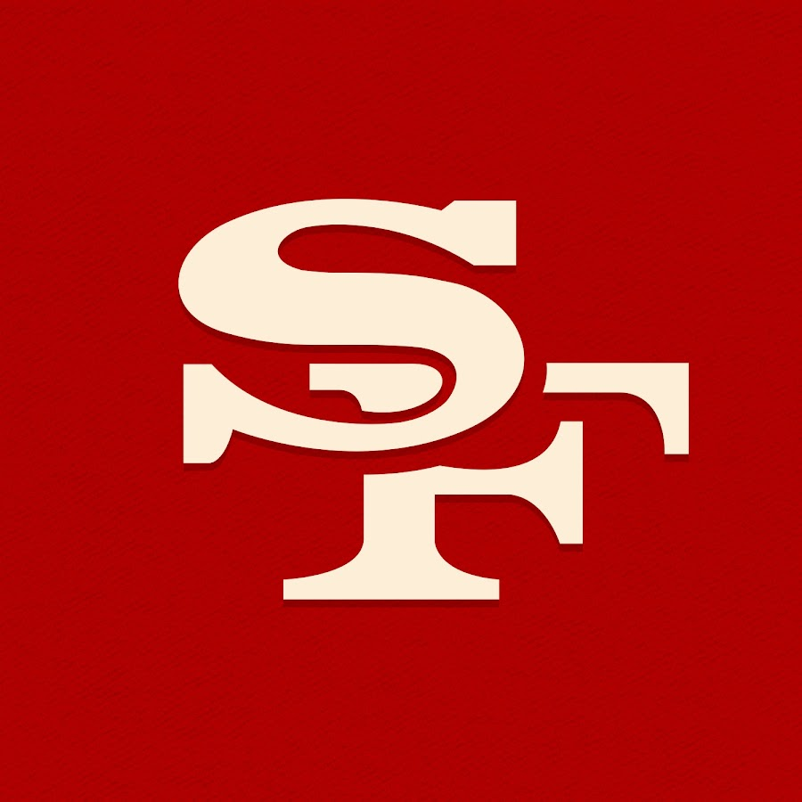

Welcome to my San Francisco 49ers fan page! The 49ers are one of the NFL's most iconic teams
Whether it's game day at Levi's Stadium or cheering from home, we stand together and support the Niners. Go 49ers!